TSCSMethods.jl Visual Guide
This page provides comprehensive visual diagrams illustrating the statistical methodology, user workflows, and package architecture of TSCSMethods.jl.
1. Statistical Methodology
Core TSCS Matching Methodology
The following diagram shows the complete flow of the time-series cross-sectional matching methodology:
Statistical Validation Framework
TSCSMethods.jl includes comprehensive validation to ensure statistical correctness:
2. User Workflows
Basic User Workflow
The standard workflow for using TSCSMethods.jl:
Advanced Workflows
Extended capabilities for sophisticated analyses:
Data Requirements & Validation
Input data structure and validation process:

3. Package Architecture
Module Structure & Dependencies
The clean modular organization of TSCSMethods.jl:
Type Hierarchy System
TSCSMethods.jl uses a clean object-oriented design with clear inheritance:
Abstract Base Types:
VeryAbstractCICModel- Base abstract type for all modelsAbstractCICModel- For non-stratified modelsAbstractCICModelStratified- For stratified models
Concrete Implementations:
CIC- Core implementation with matching, balancing, and estimationCICStratified- Stratified analysis with subgroup effectsCaliperCIC- Constrained matching within distance thresholdsRefinedCIC- Iterative match refinement capabilities
This hierarchy provides flexibility while maintaining type safety and clear interfaces.
Testing & Validation Architecture
TSCSMethods.jl includes a comprehensive quality assurance framework:
Test Categories:
- Unit Tests - Individual component testing by subsystem
- Integration Tests - End-to-end workflow validation
- Correctness Tests - Statistical validation with known outcomes
- Validation Gates - Automated quality thresholds
Statistical Validation Results:
- Coverage: 96% (✅ within target 93-97%)
- Placebo: 6.87% Type I error (✅ within target 3-7%)
- Benchmarks: Performance validated (✅ all passing)
The validation framework ensures statistical correctness while maintaining high code quality standards.
Summary
These diagrams illustrate TSCSMethods.jl as a comprehensive, professionally-designed package for causal inference:
- Statistical Rigor: Validated methodology with comprehensive testing
- User-Friendly: Clear workflows from basic to advanced usage
- Professional Architecture: Clean modular design with 37 organized files
- Quality Assurance: 8,146 tests with statistical validation gates
The package successfully bridges rigorous statistical methodology with practical usability, making advanced causal inference methods accessible while maintaining the highest standards of statistical correctness.